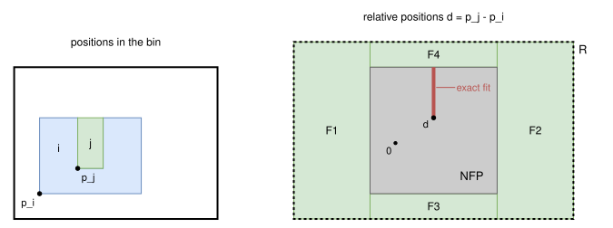
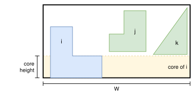

Tree search on relative positions¶
Objectives¶
Given a bin type and a set of items, this algorithm tries to prove that the items don’t fit in a bin of this type. It is used in the subproblems of the Benders decomposition.
It also solves the feasibility objective with a single bin. If it doesn’t prove that the instance is infeasible, the positions of the solution of its relaxation are checked, and used as a solution if the items don’t overlap.
It returns infeasible (proven), feasible (the relaxation is feasible, so the items may fit), or unknown (time limit, or an item type with a continuous rotation range).
Principle¶
The rotations of the items are enumerated. For a given rotation of each item, the positions of two items which don’t overlap are described exactly by their no-fit polygon: item \(j\) overlaps item \(i\) if and only if the relative position \(p_j - p_i\) of their reference points is in the interior of the no-fit polygon \(\text{NFP}_{ij}\). The complement of the no-fit polygon is not convex, so it is partitioned into convex pieces, and the relative position of each pair of items must be in one of them.
Choosing a piece for each pair gives a linear program. The choice is made by a tree search, which fixes the piece of a pair at each node and propagates the consequences to the positions of the other pairs (see Tree search below). The choice can also be made by the binary variables of the mixed-integer linear program (MILP) of Fischetti and Luzzi (2009), with the bounding box of the bin instead of a strip (see MILP below), which is much slower.
In the example below, item \(i\) is a 4 × 3 rectangle with a 1 × 2 notch, item \(j\) a 1 × 2 rectangle, and the bin is 8 × 6. The relative positions allowed by the bin form the rectangle \(R\). The no-fit polygon covers its middle, and the region outside of it is partitioned into the convex pieces \(F_1\) to \(F_4\). Item \(j\) also fits exactly in the notch: its relative positions there form a segment inside the no-fit polygon, an additional piece (see Exact fits below):

The items don’t fit if the program of every rotation combination is infeasible. The programs of the rotation combinations are independent, so they are solved in parallel (4 threads by default), and the search stops as soon as one of them is feasible. A single program in which binary variables select the rotations was tried, but its linear relaxation is much weaker and it was several times slower.
The model is a relaxation, so that an infeasible program is a proof:
the bin is replaced by its bounding box; the defects, the fixed items and the item-item spacing are ignored;
the circular arcs of the regions below are approximated by line segments outside of them.
Program¶
Input, for a rotation combination:
the items \(i = 1, \ldots, n\), each with its rotation;
for each item \(i\), its inner-fit rectangle \(\text{IFP}_i\): the positions of its reference point for which its bounding box is in the bounding box of the bin (minus the item-bin spacing);
for each pair of items \((i, j)\), the region \(R_{ij} = \text{IFP}_j - \text{IFP}_i\) of the relative positions allowed by the inner-fit rectangles, and the region \(F_{ij} = R_{ij} \setminus \text{int}(\text{NFP}_{ij})\) of the ones for which the items don’t overlap, partitioned into convex pieces \(k \in K_{ij}\). Each piece is described by its edges \((n, c)\), the half-planes \(n \cdot d \ge c\).
Problem: find positions \(p_i \in \text{IFP}_i\) of the reference points of the items, and a piece \(k_{ij} \in K_{ij}\) for each pair of items, such that
There is no objective: only the feasibility matters. Identical items with the same rotation are sorted by \(x\) (symmetry breaking).
Exact fits. An item may fit exactly in a notch of another one, or two items may touch along a whole edge: the relative position is then on a line segment or at a point strictly inside the no-fit polygon, but on no edge of the region \(F_{ij}\). These feasible positions of null area are returned by the no-fit polygon computation, and each one is an additional convex piece of \(F_{ij}\), so that the program stays a relaxation.
Tree search¶
The program of a rotation combination is solved by a depth-first search. A node keeps, for each pair of items, the pieces still allowed, and bounds on the positions:
Difference-bound matrices. All the constraints on the positions which the search uses are bounds on differences of coordinates: \(x_j - x_i \le u^x_{ij}\), and the same for \(y\). The inner-fit rectangles are differences with an origin, and the symmetry breaking is \(x_{i+1} - x_i \ge 0\). These bounds form two matrices, one for each axis, and their closure, a shortest path computation, gives the tightest bounds they imply. They are infeasible if a matrix has a negative cycle. For a pair of items, the closed bounds give the box of its possible relative positions, which takes into account the other pairs: for example, \(x_k - x_i \le u^x_{ij} + u^x_{jk}\).
Propagation. For each pair, the pieces which don’t intersect the box of the pair are removed, and the box is shrunk to the bounding box of the remaining pieces clipped to it. The matrices are closed again, and so on, until nothing changes. A node is infeasible if a pair has no piece left.
Branching. The search branches on the pair with the fewest pieces left, with a child for each of its pieces.
Leaves. Once each pair has a single piece, the program is a linear program, with the edges of the pieces as constraints, solved with HiGHS.
The propagation only uses bounding boxes, so a node in which every pair has a single piece may still be infeasible, which the linear program detects. But it removes most of the pieces: on the 5 items of data/irregular/tests/feasibility_poly2a_five_items_infeasible.json, the proof takes 8603 nodes and 462 linear programs for 738 programs of rotation combinations and sub-combinations.
MILP¶
Alternatively, the program can be solved as a mixed-integer linear program.
Variables:
\(p_i \in \text{IFP}_i\): the position of the reference point of item \(i\)
\(z^{ij}_k \in \{0, 1\}\), \(k \in K_{ij}\): \(z^{ij}_k = 1\) iff the relative position of items \(i\) and \(j\) is in piece \(k\)
Constraints:
Piece selection: the relative position of each pair of items is in one of the pieces.
Pieces: the edges of a piece are relaxed with big-M coefficients when the piece isn’t selected.
where \(M = c - \min_{d \in R_{ij}} n \cdot d\) is the smallest value for which the constraint is always satisfied in \(R_{ij}\).
Symmetry breaking: identical items with the same rotation are sorted by \(x\).
The linear relaxation of the big-M constraints is weak, so the MILP solver explores many nodes, each of them with a linear program on all the pieces. On the 5 items of data/irregular/tests/feasibility_poly2a_five_items_infeasible.json, with a single thread, the proof takes 37.8 seconds with the MILP and 1.9 seconds with the tree search; on the feasible set of data/irregular/tests/feasibility_poly2a_five_items_feasible.json, 11.3 and 1.6 seconds.
Three-item cuts (optional, off by default). For three items \(i < j < u\), the relative positions satisfy \(d_{iu} = d_{ij} + d_{ju}\). So if the piece \(a\) of \(F_{ij}\) and the piece \(b\) of \(F_{ju}\) are selected, \(d_{iu}\) is in the Minkowski sum \(a \oplus b\), and the pieces \(c\) of \(F_{iu}\) which don’t intersect it can’t be selected:
The pieces are first clipped to the rectangles \(R\), and a cut is only added when the separation of the two convex sets is larger than a small tolerance, so that the program stays a relaxation. The cuts of each triple of item types and rotations are computed once and cached, and they are only added to programs with 4 items or more. They are the feasibility cuts of Lastra-Díaz and Ortuño (2024), restricted to three items. On the 5 items of data/irregular/tests/feasibility_poly2a_five_items_infeasible.json, they make the proof of the MILP 3 times faster, but they slow down the other calls, and they didn’t improve any bound of the Benders decomposition, so they are off by default. The tree search doesn’t use them.
Rotation combinations¶
The rotation combinations are enumerated item by item. Some of them are never solved:
Identical rotations. Two rotations of an item type which give the same shape (for example, the rotations by 0 and 180 degrees of a rectangle) are only considered once.
Identical items. The rotations of identical items are non-decreasing.
Symmetry of the bin. The program only considers the bounding box of the bin, so turning a solution by 180 degrees gives another solution. If every rotation of every item type has its counterpart turned by 180 degrees, then an item, the only copy of its item type, is restricted to one rotation of each such pair.
Pairs. A partial combination in which the region \(F_{ij}\) of a pair of items is empty isn’t extended.
Before solving the program of a rotation combination:
Core widening. A cheap area test may prove it infeasible (see below).
Sub-combinations. Its sub-combinations without one of the items are checked first: if one of them is infeasible, so is the combination. Their programs are cheaper, and each of them is shared by several combinations.
The statuses of the combinations and of the sub-combinations are cached, as well as the convex pieces of the pairs of item types, so that the next calls on other sets of items reuse them. On the 5 items of data/irregular/tests/feasibility_poly2a_five_items_infeasible.json, 406 of the 512 rotation combinations are proven infeasible by a sub-combination, and the proof with the MILP goes from 17.6 to 13 seconds.
Core widening¶
The core of an item is the part of its \(y\)-range that no other item can reach, given the regions \(F_{ij}\) (each piece is convex, so its \(y\)-range gives exactly the heights at which the other item can be). Since the rotations are fixed, no other item has any point in the horizontal band of the core of an item, across the whole bin. So the item can be counted as widened to the width \(W\) of the bin on its core:
In the example below, items \(j\) and \(k\) can’t be lower than the top of the foot of item \(i\), so the band of the foot belongs to item \(i\) alone, across the whole bin:

The cores of different items are disjoint, so the rotation combination is infeasible if the sum of the widened areas exceeds the area of the bin.
This is not a reduction: the parts of an item outside of its core may be interlocked with other items, so the item can’t always be moved against a side of the bin to actually be widened. The test helps when the items are large compared to the bin; when they fill less than about three quarters of it, the cores are usually empty.
Search parameters¶
The programs of the rotation combinations are solved with 4 threads by default, until the time limit. When the algorithm is run on its own, in the not-anytime-sequential mode, a single thread is used. The linear programs of the leaves of the tree search, and the MILPs, are solved with HiGHS.
Automatic selection¶
In the exact mode, it is run for the feasibility objective with a single bin, alongside the other algorithms. It is always used in the subproblems of the Benders decomposition in the exact mode.
It can be selected with --use-tree-search-relative-positions 1 (CLI) or use_tree_search_relative_positions (Python), for the feasibility objective with a single bin only.
Strengths and limitations¶
The number of rotation combinations grows exponentially with the number of items, and the programs get harder as the items get smaller compared to the bin, since the regions \(F_{ij}\) then have more pieces, and the boxes of the propagation remove fewer of them. The algorithm proves in a fraction of a second that 2 or 3 large items don’t fit; for 5 items with 4 rotations each, a proof takes a few seconds.
Source files¶
src/irregular/tree_search_relative_positions.hpp,src/irregular/tree_search_relative_positions.cpp: the algorithmscripts/doc_figures/irregular_tree_search_relative_positions.py: the figures of this page
References:
“Mixed-integer programming models for nesting problems” (Fischetti and Luzzi, 2009)
“A branch & bound algorithm for cutting and packing irregularly shaped pieces” (Alvarez-Valdes, Martinez and Tamarit, 2013)
“Mixed-integer programming models for irregular strip packing based on vertical slices and feasibility cuts” (Lastra-Díaz and Ortuño, 2024)